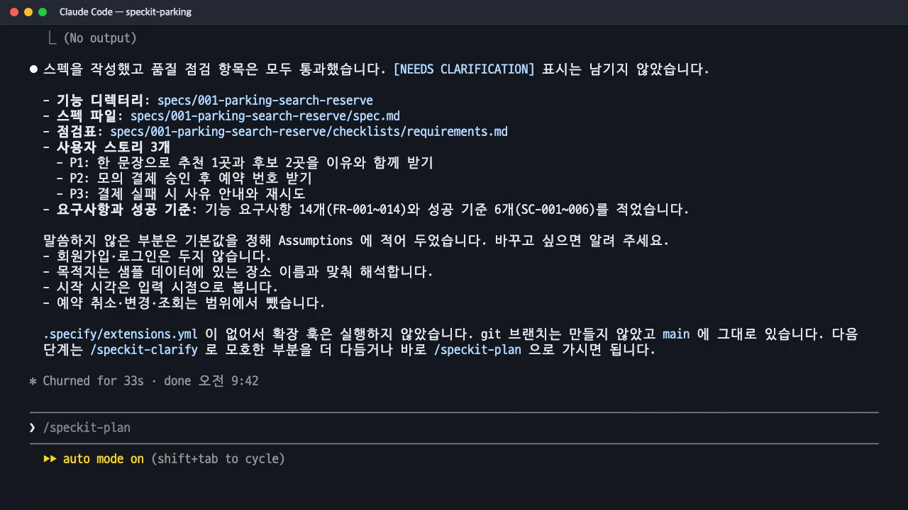

기능 설명 한 단락을 전달하면
spec.md가 생깁니다. 우선순위가 붙은 사용자 이야기, Given/When/Then 인수 시나리오, 시험할 수 있는 기능 요구사항, 기술과 무관한 성공 기준, 그리고 AI가 기본값으로 정한 가정이 어디에 어떻게 적히는지 확인합니다.
이 장의 산출물 · GitHub
이 장이 끝났을 때의 파일이 공개 저장소 uengine-oss/tutorial-speckit-handson의 태그 step-04-specify에 있습니다. 본문의 파일 이름을 눌러도 해당 파일이 열립니다.
무엇을 · 왜#
명세는 무엇을, 왜 만드는지만 씁니다. 언어·프레임워크·API 같은 어떻게는 다음 장의 계획에서 정합니다. 그래서 기능 설명에도 기술 내용을 넣지 않습니다.
/speckit-specify는 다음 순서로 진행합니다.
| 순서 | 하는 일 |
|---|---|
| 1 | 설명에서 2~4 단어의 짧은 이름을 뽑아 기능 폴더 specs/001-parking-search-reserve/를 만듭니다 (번호는 순번) |
| 2 | 현재 기능 폴더를 .specify/feature.json에 적어, 다음 스킬들이 같은 폴더를 찾게 합니다 |
| 3 | 사양 틀(spec-template)의 각 절을 채웁니다 |
| 4 | 불분명한 곳은 업계 관행으로 추측해 채우고, 정할 수 없는 곳에만 [NEEDS CLARIFICATION: 질문]을 남깁니다. 최대 3개, 우선순위는 범위 > 보안·개인정보 > 사용자 경험 > 기술 세부 |
| 5 | 사양 품질 점검표 checklists/requirements.md를 만들어 스스로 검사하고, 통과하지 못한 항목은 고칩니다(최대 3회) |
따라 하기#
- 기능 설명을 넘깁니다. 누가, 무엇을 하면, 무엇을 얻는지를 한 단락으로 씁니다.
/speckit-specify 운전자가 "강남역 근처 2시간 주차"처럼 한 문장으로 목적지와 이용 시간을 입력하면, 전국 주차장 가운데 조건에 맞는 곳을 찾아 추천 1곳과 비교 후보 2곳을 이유와 함께 보여 준다. 추천은 가격, 목적지까지 거리, 이용 시간에 맞는 요금을 따진다. 운전자는 한 곳을 골라 모의 결제를 하고, 승인되면 예약이 확정되어 예약 번호를 받는다. 결제가 실패하면 사유를 보여 주고 다시 시도할 수 있다. 주차장 데이터는 서울·부산·대구·대전·광주 등 전국 주요 도시의 샘플을 쓴다. - 요약과 기본값을 읽습니다. 33초 뒤 사용자 이야기 3개, 기능 요구사항 14개, 성공 기준 6개가 나왔고 품질 점검 16개 항목은 모두 통과했습니다.
[NEEDS CLARIFICATION]은 하나도 남기지 않았습니다. 대신 말하지 않은 부분을 기본값으로 정했다며 네 가지를 따로 알려 주었습니다. 회원가입·로그인 없음, 목적지는 샘플 데이터의 장소 이름과 맞춰 해석, 시작 시각은 입력 시점, 예약 취소·변경·조회는 범위 밖.
명세가 끝난 뒤의 요약: 사용자 이야기 3개, FR 14개, SC 6개, 기본값으로 정한 가정
질문이 없다고 모호함이 없는 것은 아니다
명세 단계는 "합리적인 기본값이 있으면 추측해서 채우라"고 지시받습니다. 그래서 질문 없이 끝나는 경우가 많습니다. 이 실습에서도 「근처」가 몇 m인지, 추천을 어떤 규칙으로 고르는지, 결제는 언제 실패하는지가 비어 있었지만 표시되지 않았습니다. 이런 곳은 다음 장의 /speckit-clarify가 정해진 기준으로 찾아냅니다.
산출물: spec.md 읽는 법#
① 사용자 이야기와 우선순위. 이야기마다 P1·P2·P3, 우선순위의 이유, 그 이야기만으로 확인할 수 있는 독립 시험이 붙습니다. P1만 만들어도 "어디에 주차할지 결정"이라는 가치를 제공하는 MVP가 되도록 나눴습니다.
### User Story 1 - 한 문장으로 주차장 추천받기 (Priority: P1)
**Why this priority**: 서비스의 핵심 가치이며, 이것만으로도 "어디에 주차할지 결정"이라는 가치를 전달하는 MVP다.
**Independent Test**: 문장을 입력하고 추천 1곳·후보 2곳과 이유가 표시되는지만 확인하면 된다.
② 인수 시나리오(Given/When/Then). 정상 흐름뿐 아니라 "후보가 3곳 미만"처럼 경계 상황도 시나리오로 적습니다. 이 번호가 나중에 시험과 수렴 점검의 기준이 됩니다.
1. **Given** 샘플 데이터에 강남역 인근 주차장이 3곳 이상 있다, **When** 운전자가 "강남역 근처 2시간 주차"를 입력한다,
**Then** 추천 1곳과 비교 후보 2곳이 표시되고 각 곳에 가격, 목적지까지 거리, 2시간 이용 요금, 선정 이유가 함께 나온다.
4. **Given** 조건에 맞는 주차장이 3곳 미만이다, **When** 검색한다, **Then** 찾은 만큼만 보여 주고 후보가 부족하다는 안내를 함께 표시한다.
③ 엣지 케이스. 해석할 수 없는 문장, 데이터에 없는 지역, 영업시간을 벗어난 요청, 만차, 중복 결제 요청을 따로 모읍니다.
④ 기능 요구사항(FR). 한 문장에 하나씩, 시험할 수 있게 씁니다. "~해야 한다", "~해서는 안 된다"로 끝납니다.
- **FR-008**: 시스템은 선택한 주차장에 대해 모의 결제를 수행해야 하며, 실제 결제 연동을 사용해서는 안 된다.
- **FR-012**: 같은 결제 요청이 반복되어도 예약은 한 건만 만들어져야 한다.
⑤ 핵심 엔터티. 주차장, 검색 요청, 추천 결과, 결제 시도, 예약. 필드 이름과 형식은 아직 정하지 않고 담을 정보만 적습니다.
⑥ 성공 기준(SC). 측정할 수 있고 기술과 무관하게 씁니다.
- **SC-001**: 운전자는 문장 입력부터 추천 결과 확인까지 10초 안에 도달한다.
- **SC-006**: 이 문서의 모든 인수 시나리오에 대응하는 자동 시험이 있고 모두 통과한다.
⑦ 가정(Assumptions). AI가 추측으로 채운 기본값이 여기에 남습니다. 사람이 가장 먼저 읽어야 할 절입니다. 가정이 틀렸다면 이 단계에서 바로잡는 데 드는 비용이 가장 적습니다.
함께 생기는 품질 점검표#
checklists/requirements.md는 명세 단계가 스스로 평가하는 16개 항목으로 구성됩니다. 내용 품질(구현 세부가 없는지, 비전문가가 읽을 수 있는지), 요구사항 완전성(시험할 수 있는지, 성공 기준을 측정할 수 있는지, 범위가 정해졌는지), 기능 준비도로 나뉩니다. 이 실습에서는 모두 [x]로 통과했습니다. 다만 이 점검표는 글의 모양을 보는 것이라, 「근처」의 범위처럼 내용이 빠진 부분은 찾지 못합니다. 그 일은 다음 장의 명확화와 7장의 품질 점검이 맡습니다.
확인 문제#
`[NEEDS CLARIFICATION]` 표시는 언제, 몇 개까지 남기나요?
범위나 사용자 경험에 크게 영향을 주고, 그럴듯한 해석이 여럿이며, 합리적인 기본값이 없을 때만 남깁니다. 전체에서 최대 3개이고, 넘으면 영향이 큰 3개만 남기고 나머지는 추측해서 채웁니다. 남은 표시는 표로 된 선택지와 함께 한꺼번에 묻습니다.
이 실습의 spec.md에서 사람이 가장 먼저 확인해야 할 절은 어디인가요?
「Assumptions」입니다. 명세 단계가 질문하지 않고 기본값으로 정한 내용(로그인 없음, 시작 시각은 입력 시점, 예약 취소·변경은 범위 밖 등)이 모두 여기에 있습니다. 실제로 「시작 시각은 입력 시점」은 나중에 일관성 분석에서 문제로 지적돼 「결제 승인 시점」으로 바뀌었습니다(8장).